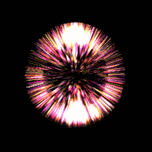
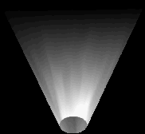
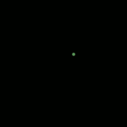

|
ビューワーでは作成されたパーティクルエフェクトをプレビューできます。ビューワーは中央ボタンで平行移動でき、マウスの右ボタンで回転でき、スクロールホイールで拡大・縮小ができます。
スタートとエンドの入力欄は 再生ボタンを押したときのプレビューの間隔を制御します。(このプログラムに関係するすべてのタイミングと同じように)この数値はフレーム(60フレーム=1秒)で換算されます。例えば、間隔を[120,180]と設定した場合、再生ボタンを押すと2秒目からアニメーションが再生され、1秒後の3秒目で停止します。 ステップボタン(二つの三角形)を1回押すとアニメーションを1フレーム進めます。この数値はビューワーで表示している現在のフレームです。 グリッドの表示、色、その他の設定はオプションで変更できます。背景色/画像、光源等といった他の設定も同様に変更できます。 |
 | これは作成中の全てのパーティクルエミッターを格納しているプロジェクトの構造の概要です。ツリーのノードをクリックすると様々なウインドウにプロパティが表示され、そのプロパティを編集できるようになります。ノードツリーを右クリックすると新しいノードを追加するオプションを含むメニューが表示されます。この新しいノードは現在選択されているノードの子に追加されます。Effekseerの継承の考え方（子のノードが親のノードのプロパティを一部引き継ぐというもの）があります。継承については詳細は後で記載します。また、ノードはコピーや貼り付けができ、とても便利です。 |
 |
Effekseer内のたくさんの数値入力欄は左の画像のような見た目になっています。このような入力欄は、その値がランダムな値をとることができることを示しています。入力のための2つのオプションがあり、機能的には二つとも等しくなっています。
|
 |
共通ウインドウにはノードがパーティクルを出現させる方法を調節するための標準的なパラメーターが全てあります。上から順に説明します。描画はビューワーにこのノードのパーティクルの表示/非表示を設定します。註：これは単に編集を楽にするためのものであって、表示の設定によらず最終的な出力では表示されます。
名称は、便利にする以外の目的には使用されません。一度、ノードツリーでたくさんのノードを使用し始めると、それらを説明する名称をつけたくなるでしょう。 生成数は、ノードが出現させるパーティクルの最大数を設定します。無限チェックマークはそれを上書きして、ノードは制限なくパーティクルを出現させるようになります。 生存時間はフレーム単位でそれぞれのパーティクルが出現してからの生存時間を設定します。これは各パーティクルごとの独自の値で、パーティクルが出現してからすぐにカウントが始まります。指定した時間が過ぎるとパーティクルは自動的に消滅します。 これは寿命により削除がチェックされてないと無視されます。 生成時間はノードがどの程度早くパーティクルを生成するかを設定します。1の値は1フレームに1つパーティクルを生成することを意味します。10の値は10フレームに1回、パーティクルを生成することを意味します。小数も指定することができ、例えば0.1を指定すると1フレームに10個パーティクルが生成されます。 生成開始時間はパーティクルを生成し始めるまでの待機時間を設定します。これは全てのエミッターが同時に動作し始めるするわけではない連続的なエフェクトに便利です。 |
 |
サンプルプロジェクト "00_Basic/Laser03.efkproj" は影響のいいサンプルです。表示されない "Core" パーティクルは "Core"パーティクルを継承する"Track"の位置と回転を誘導し、独特のジグザグの軌跡を表現します。 同時に、"Track"の位置を用いてジグザグの軌跡にそってパーティクルが生じるように"Particle"ノードは"Track"ノードを継承します。 |
 |
標準設定のウインドウから分離されたウインドウに生成位置ウインドウがあります。標準設定では、空間の単独の独立した点に対して相対的な位置にパーティクルを生成します。しかし、他に2種類の生成方法があります。1つ目は円であります。 開始角度と終了角度はパーティクルが生じる円の範囲を指定できます。標準値は0～360度で、結果として円周全てにパーティクルが生じます。しかし、円の特定の弧のみにパーティクルが生じるように減らすこともできます。 円に沿って生じさせる複数の選択肢が存在します。時計回りと反時計回りは(すなわち時計の針の方向に)円に沿って連続的に順番にパーティクルが生成されます。ランダムはパーティクルを生じさせるために使用可能な頂点の中でランダムに選択しつつパーティクルを生成します。 頂点は円のパーティクルを生成する角度の数を制御します。 例えば、それが8だった場合、円の周囲を回転するための時計/反時計回りの設定に従って8か所からパーティクルが生じます。 同様にランダムだった場合、8個の角度からランダムにパーティクルが生じます。 もし、ランダムモードを使用している場合、ランダムの間隔の分散を増やしたいなら、360のような大きな数に頂点数を大きくします。 生成角度に影響はパーティクルが生成された場所の円の表面に対して垂直に生成されたパーティクルのY軸が向く効果を持つ。以下の図はそれの機能を描画しています。 |
 |
 |
| 円に沿って生成されつつ、Y軸方向に延びるパーティクル | それらのパーティクルで「生成時に角度設定」を有効にした効果 |
 | 多くの点で、(3次元であることを除いて)生成位置(円)ととても似ています。 しかし、連続的な生成はこれに存在しません。球の表面に沿ってランダムにパーティクルを生成するのみです。 X軸角度とY軸角度はパーティクルが生成される球の表面を制御します。 標準では0に設定させており、これではパーティクルが生成されません。 球の全ての表面からパーティクルが生成させるようにするために、ばらつきを180に設定すると、360度になり、すなわち軸の周囲全体を覆います。 しかしながら、上のセクションで円の弧に沿ってのみ生成するするように、球の表面の局所的なくさびを使用して生成できます。 下の図を参照してください。 |
|  |  |
| 360度全ての球にパーティクルが生成された場合 | それぞれの軸にそって60度に小さくした場合の球のくさび |
 |
イーズインとイーズアウトのドロップダウンボックスは、時間の経過とともに2つの値の間でパーティクルが遷移するスタイルを変更します。 左の図は、イージング速度のさまざまな組み合わせを示しています。 これらの例は、それぞれ{Ease In-Ease Out}の組の以下の組み合わせを参照しています。
|


 |
Effekseerでは、磁石のように作用するパーティクルエミッタのターゲット位置を定義し、Effekseer内に生成されたパーティクルを描画します。以下に示すサンプルプロジェクト00_Basic/Homing_Laser01.efkprojは 、「ホーミングレーザー」を作成するために、この機能を使用しています。 それらは中央の発砲地点から飛び出し、ターゲット位置に向かいます。 振る舞いウィンドウの一番下で、あなたはエミッタのターゲット位置を定義することができます。
標準では、ターゲット位置は有効ではないため、その位置を変更しても目に見える効果はありません。 引力を有効にするドロップダウンリストから引力を選択することにより、振る舞いウインドウを介してターゲット位置を有効にできます。 引力のパラメータは、どのように迅速に（強制的に）粒子がアトラクターに引き込まれているか、を制御します。 抵抗パラメータは、どの程度、パーティクルが直接引力(点)に引き込まレルことに抵抗するかを制御します。 大きい数値の場合、粒子は引っ張られた時点で引力(点)に直接詰まります。小さい数値の場合、粒子は引力(点)の周りの楕円軌道に入ります（数値が小さいほど軌道の半径が大きくなります）。 抵抗は負の場合もあります。この場合、引力のポイントは実際に粒子を引っ張るのではなく、押し退けます。 |

|  |
UVは、あなただけのテクスチャ画像の全てではなく、一部を描画できます。 これには、さまざまな用途があり、特に、我々はスクロールとアニメーションの設定について説明します：
|
|  |  |
| パーティクルは歪みのない状態で前後に移動します。 | それらの同じパーティクルは、歪みが加えられたテクスチャの後を通過します。 |


 |
リングは強力なオプションで、テクスチャを単純な平面の四角形以外の図形に展開することができます。 この名前にもかかわらず、リングを使用して、円、三角、円錐、円柱、ピラミッド、キューブなどさまざまな幾何学的形状を生成することができます。
頂点数は、あなたがN角形を構成する点の数を設定することができます。 デフォルトでは16で、円形の形をしています（36などのより高い値に設定することでさらに滑らかな円を得ることができます）。 ただし、これを低い値に設定して他の形状を作成することもできます。 左の画像に見られるように、3つの頂点は三角形を作成し、4は四角形/菱形を作成し、5は五角形を作成します。 視野角は 、あなたが描く円（円周）の量を変更することができます。これは円形/球状の生成方法で使用される設定に非常に似ています。左のイメージは、異なる形状のこの値の異なる設定を示しています。 左から右に360度、270度、180度を示します。 外側と内側は、リングの外側と内側の半径のサイズ/位置を調整します。 これらの値の創造的な設定を使用すると、様々な種類の形状を作成できます。 例えば、内側の半径を0に設定すると、リングが円に変換されます。 さらに、半径は2つの異なる軸で調整することができ、外側の半径を内側の半径よりも高くすることができます。 これにより、円錐や円柱のような3次元形状を作成することができます。 これを頂点数と組み合わせると、より多くの3D形状を作成できます。 例えば、頂点が3つの円錐はピラミッドを作成し、頂点が4つの円柱は立方体を作成します。 カラーブレンドの点では、リングは最大3色のグラデーションをサポートします。 外側の半径に最も近い領域には1つの色、内側の半径に最も近い領域には1つの色、これらの2つの中間色には1つの色があります。 センター比率パラメータは、中間カラーの位置を調整します。 数値が小さいほど内側の半径に近づきますが、数値が大きいほど外側の半径に近づきます。 |
 |
 |
| 不透明度、半径、および中央の比率の設定が異なるリング | Y方向の外側半径を拡張することによって作られた3D形状 |
 |
 |
| 透過性なしで出力されたスプライトシート | 「Generate alpha」オプションを使用して出力された同じスプライトシート |